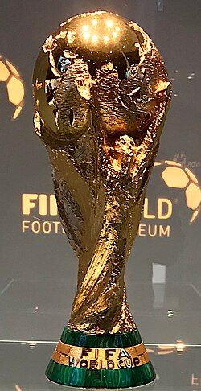
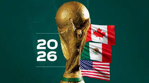
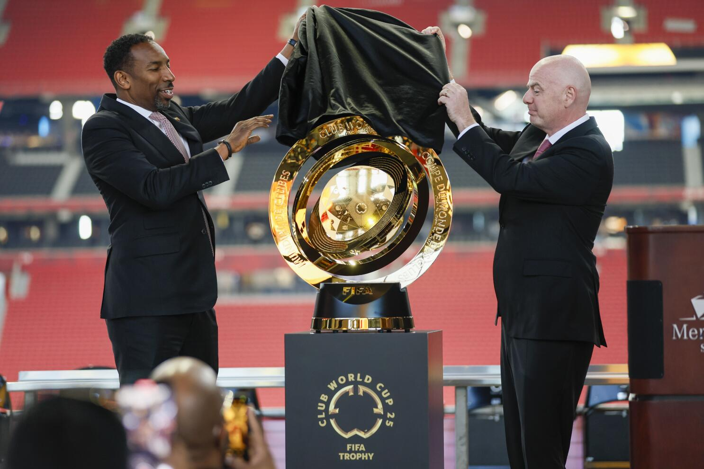

¡Bienvenido al Foro del Mundial 2026!
Comparte tus opiniones, fotos y emociones sobre los partidos, jugadores y momentos históricos del Mundial 2026.
Comparte tus opiniones, fotos y emociones sobre los partidos, jugadores y momentos históricos del Mundial 2026.
Ana: El Mundial de Fútbol es el torneo internacional de selecciones más importante del mundo, organizado por la FIFA (Federación Internacional de Fútbol Asociación). Su creación surgió de la necesidad de tener una competición global que reuniera a los mejores equipos de cada continente, más allá de los Juegos Olímpicos.
Carlos: La idea de un torneo mundial fue propuesta por primera vez por Jules Rimet, presidente de la FIFA en la década de 1920.
Laura: El primer Mundial se celebró en 1930 en Uruguay, con la participación de 13 equipos y con el país anfitrión coronándose campeón.
